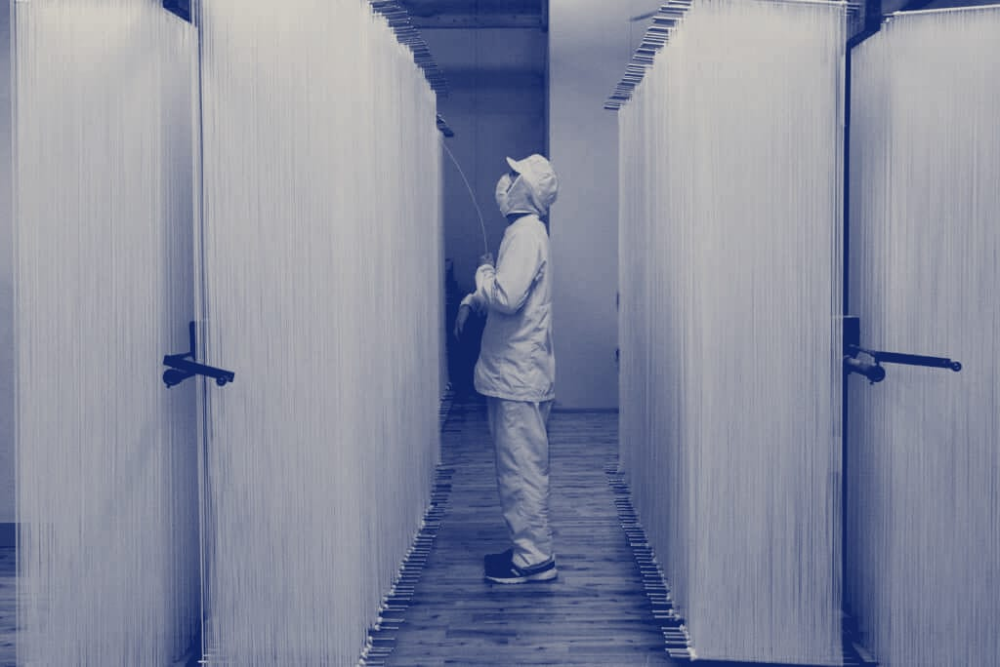

공장 견학
공장 견학은 10~11월 화요일과 목요일에 하루 두 번, 회차마다 12명까지 받습니다.
- 시간
- 10:00 · 14:00, 50분
- 정원
- 회차마다 12명
- 요금
- 어른 3,000원 · 어린이 2,000원
- 나이
- 만 7세 이상
견학은 제면실에서 압연과 절출을 보고, 건조장과 건조실을 거쳐 포장실에서 끝난다. 요금에는 소면 900 g 한 봉이 들어 있다.
만 14세 미만 어린이는 어른과 함께 와야 한다. 한 번에 8명까지 신청할 수 있다.
